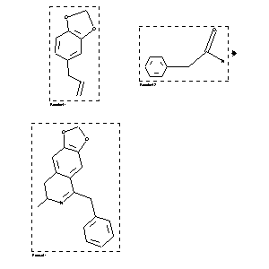

|  |
| FA | RX(1); FLST(1); RX(1) |
Reaction (1 of 1)
| Reaction ID | 132163 |
| Reactant BRN | 136380; 507886 |
| Reactant | 5-allyl-benzo[1,3]dioxole; 2-phenyl-acetamide |
| Product BRN | 272421 |
| Product | 5-benzyl-7-methyl-7,8-dihydro-[1,3]dioxolo[4,5-g]isoquinoline |
| No. of Reaction Details | 1 |
Reaction Details (1 of 1)
| Reaction Classification | Preparation |
| Comment | Handbook |
| Citation Pointer | 542450; Journal; Kametani; YKKZAJ; Yakugaku Zasshi; 72; 1952; 1090, 1092; Chem.Abstr.; 1953; 10538; |
Reference (1 of 1)
| Citation Number | 542450 |
| Document Type | Journal |
| Authors | Kametani |
| CODEN | YKKZAJ |
| Journal Title | Yakugaku Zasshi |
| Journal/Review Without CODEN | Chem.Abstr. |
| (Series) Volume | 72 |
| Publication Year | 1952; 1953 |
| Page | 1090, 1092; 10538 |